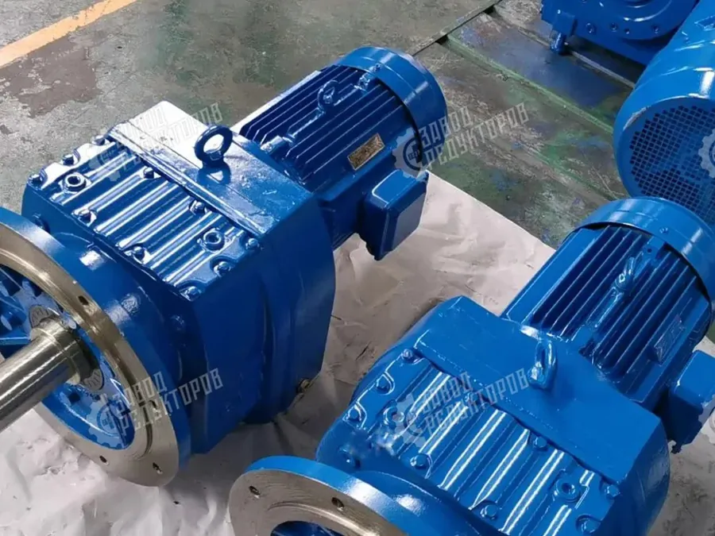

Собственное производство · Челябинск · отгрузка по всей России
Промышленный волчок измельчает мясо, шпик и мороженые блоки, продавливая продукт шнеком через решётку и ножевой комплект. Привод работает с постоянными ударными нагрузками: кости, жилы и подмороженные куски резко тормозят шнек. Правильный редуктор определяет ресурс волчка, стабильность фарша и безопасность оператора при заклинивании.
Разбираем, как рассчитать момент на шнеке, учесть ударный характер нагрузки через сервис-фактор и подобрать габаритный аналог EVL взамен импортного редуктора по присоединительным размерам и передаточному числу.


Шнек волчка создаёт высокое осевое усилие: продукт уплотняется перед решёткой, а ножи режут волокна и попадающиеся включения. Нагрузка не постоянна — она пульсирует с каждым оборотом и резко возрастает при подаче мороженого блока или кости. Для привода это означает крутящий момент, который в пиках может кратно превышать номинальный, поэтому редуктор считают не по среднему, а по пиковому режиму с запасом.
Второй фактор — низкие рабочие обороты шнека, обычно 150–350 об/мин против 1450 об/мин четырёхполюсного двигателя. Требуется существенное понижение с передаточным числом i=n1/n2 порядка 4–10. Редуктор должен держать реверс при разгрузке заклинившего шнека и переносить частые пуски под нагрузкой, характерные для сменной работы цеха.
Выходной момент считают по формуле T=9550·P·КПД/n2, где P — мощность двигателя в кВт, n2 — обороты шнека, КПД цилиндрического или коническо-цилиндрического редуктора берут 0,94–0,97. Например, при P=7,5 кВт, n2=200 об/мин и КПД 0,95 момент составит около 340 Н·м. Это номинал; для волчка его умножают на сервис-фактор.
Сервис-фактор для волчка принимают повышенным (1,5–2,0 и выше) из-за ударов и возможного кратковременного стопорения шнека. Итоговый расчётный момент сравнивают с допустимым моментом редуктора на тихоходном валу. Передаточное число подбирают так, чтобы получить нужные обороты шнека от стандартного мотора: i=n1/n2, при n1≈1450 об/мин и n2=200 об/мин это i≈7,25.
Волчок стоит в цехе с ежесменной мойкой, паром и агрессивной химией. Корпус привода и вал нужно защитить от прямого попадания воды и жира: применяют усиленные манжеты, лабиринтные уплотнения, окраску пищевого стандарта либо кожухи из нержавеющей стали. Дыхательный сапун и правильный уровень масла предотвращают подсос влаги при остывании после мойки.
Для контакта с пищевой средой в редукторах используют смазку с допуском H1, а наружные поверхности делают гладкими, без карманов для скопления фарша. Такое исполнение важнее «паспортной» мощности: типовой промышленный редуктор без доработок в мясном цехе быстро набирает влагу в масло и корродирует по валу.
Если на волчке стоял импортный мотор-редуктор (SEW, NORD, Bonfiglioli и др.), мы подбираем габаритный аналог EVL по присоединительным размерам, крутящему моменту и передаточному числу. Для распространённых типоразмеров SEW есть подтверждённые соответствия: R37→EVL 163, R57→EVL 185, R77→EVL 197; точный аналог под ваш вал и фланец даёт калькулятор подбора.
Мы не приписываем себе оригинальные бренды: EVL — российский редуктор производства ООО «НИИ АТТ» (Челябинск), спроектированный как замена импорта по размерам и характеристикам. Для нестандартных приводов сравниваем момент, i, диаметр вала, тип монтажа и подбираем аналог EVL в калькуляторе по параметрам, без выдумывания несуществующих моделей.
Насаженный редуктор (полый вал на валу шнека) избавляет от муфты и упрощает демонтаж при санобработке; реакцию момента воспринимает торсионный рычаг. Важно выдержать соосность и не перетянуть посадку, иначе растут вибрации и греются подшипники. Первую замену масла делают после обкатки, далее — по наработке и температуре корпуса.
Ресурс привода волчка определяют пиковые удары и качество уплотнений. Контролируйте температуру корпуса (устойчивый перегрев — сигнал перегруза или нехватки масла), отсутствие течей по манжетам и появление эмульсии в масле после моек. Своевременная замена уплотнений дешевле, чем ремонт вала и корпуса после попадания влаги.
Чтобы подобрать редуктор без ошибок, соберите паспортные и фактические данные: мощность и обороты двигателя, требуемые обороты шнека, диаметр вала и тип монтажа, а также сведения о продукте (свежее/мороженое, наличие костей). Эти параметры задают момент, передаточное число и исполнение по влаге и гигиене.
На основе замеров мы рассчитываем момент по формуле, назначаем сервис-фактор под ударный режим и предлагаем аналог EVL в калькуляторе подбора. Цену формируем по параметрам: точная стоимость — по запросу после уточнения типоразмера, исполнения корпуса и смазки.
| Параметр | Значение |
|---|---|
| Мощность двигателя P, кВт | по паспорту двигателя |
| Обороты двигателя n1, об/мин | ≈1450 (4 полюса) |
| Обороты шнека n2, об/мин | 150–350 |
| Диаметр вала шнека, мм | замер штангенциркулем |
| Тип монтажа | насадной / фланцевый / лапы |
| Продукт | свежее / мороженые блоки / с костью |
| Величина | Значение |
|---|---|
| Мощность P | 7,5 кВт |
| Обороты шнека n2 | 200 об/мин |
| КПД редуктора | 0,95 |
| Момент T=9550·P·КПД/n2 | ≈340 Н·м |
| Сервис-фактор (ударный) | 1,75 |
| Расчётный момент с запасом | ≈595 Н·м |
Подбор редуктора для промышленного волчка: расчёт момента на шнеке, учёт ударных нагрузок и российский аналог EVL взамен импортного привода.
Редуктор волчка (мясорубки) работает в ударном режиме: шнек продавливает фарш через решётку, встречая кости и мороженые блоки. Привод рассчитывают по пиковому моменту T=9550·P·КПД/n2 с сервис-фактором 1,5–2,0, понижая 1450 об/мин двигателя до 150–350 об/мин шнека. Исполнение — под ежесменную мойку: усиленные уплотнения, смазка H1, защита вала от влаги.
Взамен импортного мотор-редуктора волчка подбираем габаритный аналог EVL производства ООО «НИИ АТТ» по присоединительным размерам, моменту и передаточному числу i=n1/n2. Для SEW действуют соответствия R37→EVL 163, R57→EVL 185, R77→EVL 197; точный аналог и цену определяет калькулятор подбора по параметрам. Замену считаем честно, без выдумывания моделей и стоимости.
| Параметр | Диапазон / формула |
|---|---|
| Обороты шнека n2 | 150–350 об/мин |
| Передаточное число i | i=n1/n2 ≈ 4–10 |
| Момент T | T=9550·P·КПД/n2 |
| Сервис-фактор | 1,5–2,0 (ударный) |
| Смазка | пищевой допуск H1 |
Подбор аналога по параметрам — калькулятор, каталог аналогов — все аналоги импорта, замена импорта — импортозамещение.
Рассчитаем замену по присоединительным размерам, пришлём КП и сроки. Производство ООО «НИИ АТТ», гарантия 24 месяца.
Получить расчёт